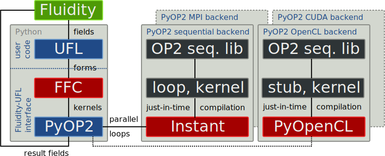

The simulation was carried out with the Fluidity multi-phase CFD code solving the non-hydrostatic Navier-Stokes equations, using a free surface and wetting and drying algorithm (courtesy Simon Funke).
How do we get performance portability for the finite element method without sacrificing generality?
... to isolate numerical methods from their mapping to hardware
... as the greatest opportunities are at the highest abstraction level
... for generative, instead of transformative optimisations
... capture and efficiently express characteristics of the application/problem domain
... encapsulate specialist performance expertise and deliver domain-specific optimisations
... means computing the same kernel for every mesh entity (cell, facet)
... implemented as a thin wrapper on top of backend-specific linear algebra packages:
PETSc on the CPU, Cusp on the GPU

CG with Jacobi preconditioning using PETSc 3.1 (PyOP2), 3.2 (DOLFIN)
Single core of an Intel Xeon E5650 Westmere (HT off), 48GB RAM
2D unit square meshed with triangles (200 - 204800 elements)
Revision 6906, Tensor representation, CPP optimisations on, form compiler optimisations off
All the code mentioned is open source and available on GitHub. Try it!
https://github.com/OP2/OP2-Common
https://code.launchpad.net/~mapdes/ffc/pyop2
/